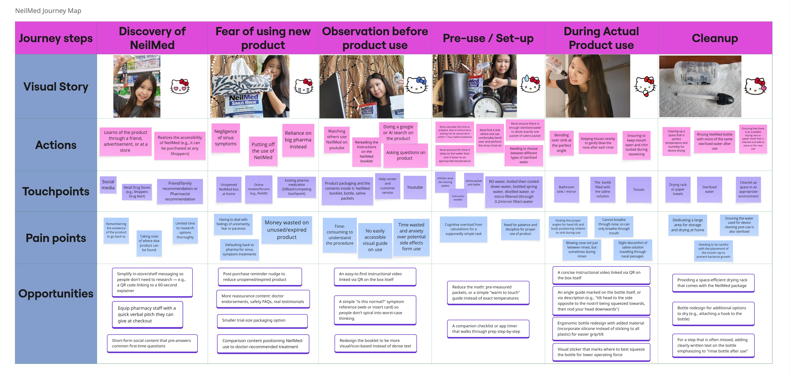

Tina's Take on the NeilMed SINUS RINSE™ Bottle
Exploring the cognitive and physical demands of a familiar healthcare product through journey mapping and Hierarchical Task Analysis.
Why I Wanted to Explore This
A familiar product, a surprisingly demanding process
As a long-term NeilMed SINUS RINSE™ user, I have often found the process of carrying out a rinse cognitively taxing. This sometimes diverted me from using the product consistently, even when I felt I needed it.
I wanted to explore this experience through a systems-design and human-factors lens. By mapping the complete user journey and documenting the tasks involved, I could examine where instructions, decisions, physical actions, and preparation might introduce friction.
I also used real photographs of myself at different stages of the process to help illustrate my own experience, including emotions, pain points, and interactions with the product.
Journey Mapping
The journey map illustrates my interactions with the NeilMed product, highlighting key touchpoints, pain points, and opportunities for improvement. It provides an overview of the experience, from initial contact with the product through preparation, use, and post-use activities.

Journey map based on my personal experience using the product.
Human-factors perspective: A product's usability involves more than the main action. Instructions, preparation, decision-making, physical positioning, and cleaning can all contribute to the overall experience.
Hierarchical Task Analysis (HTA)
I conducted a Hierarchical Task Analysis to identify and document the tasks required to use the NeilMed product. I also considered the relative difficulty of each task based on my observations and personal experience.
Task decomposition
Breaking the process into individual steps helps reveal the decisions, actions, and preparation involved beyond the core rinsing activity.
Difficulty assessment
Comparing tasks helps identify steps that may warrant closer attention from a cognitive or physical ergonomics perspective.
Task Breakdown and Relative Difficulty
The table below summarizes the eleven tasks and the main observations associated with each one. On smaller screens, scroll horizontally to read the full table.
| Task and Observations | Difficulty |
|---|---|
|
1. Read Instructions
This requires locating the relevant instructions. Although instructions are available, the manual contains substantial text covering multiple products, including SINUS RINSE™, SINOFLO® READY RINSE®, SinuGator® Cordless Pulsating Nasal Wash, NASAFLO® NETI POT, NasaMist® products, Naspira Drops®, NasoGel® products, Clearcanal®, and others. This can create unnecessary confusion, page flipping, and difficulty finding the instructions relevant to the purchased product. |
Moderate |
|
2. Find the Right Time to Use
The user must plan ahead because nasal drainage may continue after use. Instructions advise using the rinse bottle at least one hour before bedtime or lying down. However, this timing may not always prevent drainage from remaining an issue for several hours after use. |
Moderate |
|
3. Prepare the Water
Water volume, temperature, and sterilization all require consideration. The instructions describe options such as reverse-osmosis water, boiled and cooled water, bottled spring water, distilled water, or appropriately micro-filtered water. Choosing between these options requires the user to consider which resources are available at a particular time. |
Difficult |
|
4. Rinse the Bottle with Prepared Water
This step may be forgotten or performed automatically with non-sterilized water. Using water that is not appropriate for the device's cleaning instructions can introduce a sanitation risk. |
Moderate |
|
5. Fill the Bottle to the Line
This requires visually judging the water level. The amount may be overestimated, potentially wasting prepared water and leaving less available for cleaning the bottle after use. |
Moderate |
|
6. Add the Saline Packet Contents
Opening the saline packet requires only a small amount of finger strength. Scissors are not needed. |
Easy |
|
7. Shake the Bottle with the Nose Cap On
This step may be forgotten, although it is relatively easy to perform. The user must remember to keep the nose cap sealed while shaking the bottle so the saline contents dissolve without spilling water. |
Easy |
|
8. Prepare Tissues for Between-Rinse Use
After rinsing one nostril, fluid discharge may occur as the solution and mucus drain from the nasal passages. Having tissues ready is a useful preparation step, but acquiring them is relatively simple both physically and cognitively. |
Easy |
|
9. Perform Nasal Irrigation
The user administers the saline solution using
the squeeze bottle. Head and body positioning
must be coordinated to support the intended
direction of irrigation. This involves hip
hinging, head tilting, elbow angle, and bottle
orientation.
|
Difficult |
|
10. Clean the Device with Prepared Water
Users may underestimate the importance of cleaning and assume that tap or non-sterilized water is appropriate. Following the product's cleaning instructions is important for preparing the device for its next use. |
Difficult |
|
11. Dry the Device Appropriately
Drying is another step that may be underestimated. The cleanliness of drying materials and the environment in which the device dries can affect hygiene. The device should be dried according to the manufacturer's instructions. |
Moderate |
Note: Difficulty ratings represent this personal task analysis, rather than a validated assessment of all users. They could differ depending on individual abilities, experience, and circumstances.
Looking at the Product Through a Human-Factors Lens
Mapping the user journey alongside the individual tasks helped me examine the experience at two levels: the broader sequence of interactions and the specific actions required at each step. Together, these methods highlight how cognitive demands, physical requirements, instructions, and preparation can shape the usability of an everyday healthcare product.
Key takeaway: A product can appear simple while its complete use process involves many decisions, preparation steps, and physical actions. Looking at the entire journey helps reveal friction that might otherwise be overlooked.